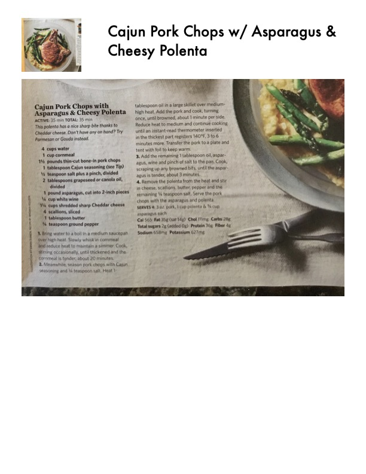

Cajun Pork Chops with Asparagus & Cheesy Polenta

Original cookbook page 59
This polenta has a nice sharp bite thanks to Cheddar cheese. Don't have any on hand? Try Parmesan or Gouda instead.
Total: 35 min
Ingredients
- 4 cups water
- 1 cup cornmeal
- 1½ pounds thin-cut bone-in pork chops
- 1 tablespoon Cajun seasoning
- 1 teaspoon salt plus a pinch, divided
- 2 tablespoons grapeseed or canola oil, divided
- 1 pound asparagus, cut into 2-inch pieces
- ¼ cup white wine
- 1½ cups shredded sharp Cheddar cheese
- 4 scallions, sliced
- 1 tablespoon butter
- ¼ teaspoon ground pepper
Instructions
- Bring water to a boil in a medium saucepan over high heat. Slowly whisk in cornmeal and reduce heat to maintain a simmer. Cook, stirring occasionally, until thickened and the cornmeal is tender, about 20 minutes.
- Meanwhile, season pork chops with Cajun seasoning and ½ teaspoon salt. Heat 1 tablespoon oil in a large skillet over medium-high heat. Add the pork and cook, turning once, until browned, about 1 minute per side. Reduce heat to medium and continue cooking until an instant-read thermometer inserted in the thickest part registers 140°F, 3 to 6 minutes more. Transfer the pork to a plate and tent with foil to keep warm.
- Add the remaining 1 tablespoon oil, asparagus, wine and pinch of salt to the pan. Cook, scraping up any browned bits, until the asparagus is tender, about 3 minutes.
- Remove the polenta from the heat and stir in cheese, scallions, butter, pepper and the remaining ½ teaspoon salt. Serve the pork chops with the asparagus and polenta.
Recipe #59 from collection